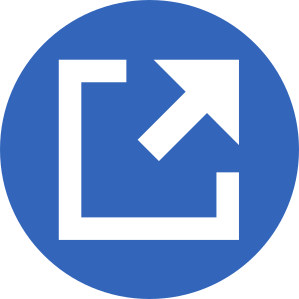

My RSS Algo
An open source client-side algorithmically-driven RSS reader . . . An open source client-side algorithmically-driven RSS reader built at the Suffolk LIT Lab. Use üëç & üëé + Seen or Open to feed the algo. Refresh this page to update card order et al. Searches, votes, & settings don't leave your device. Customize your algo and timeline behavior in Settings. Curate sources in Feeds—starter lists available. Add feeds with the blue plus button. For project updates, visit our GitHub page. [shrink description]
Settings
You can manage your feeds by clicking Feeds at the top of this page. See additional controls below. To determine what articles you like, we make use of insights from TF-IDF, comparing all the text from the cards you vote up or down with everything you've "seen." I hope to write a more complete explanation sometime. When I do, I'll put a link here. Until then, you can always look at the code.
Note: when figuring out what you "like" we look only at the card's domain, title, description, and the RSS Feed's name. We don't look at the content of the article. We convert all feed names into hypenated words. That's why you might see things like nyt-top-stories (NYT > Top Stories) in the word lists below. Also, we do something similar for an article's domain (e.g. nytimes-com).
Privacy
You don't need an account, nor do you need to provide any personally identifying information, to use My RSS Algo. Any searches or votes you make are stored only in your browser as part of localstorage. The same is true for any other persistent data (e.g., your filters and the choices you make below). Presumably GitHub (which hosts this site) keeps some log files. When fetching your feeds we make use of a couple of proxy servers. First we use our own, then as fallbacks: corsproxy.io and cors.lol respectivly. FWIW, corsproxy claims not to keep log files. The publishers of these feeds, however, only see the IP addresses of the proxy servers when they are downloaded. We do, however, embed preview images and a site's favicon as part of most article cards. So, unless you have the "Exclude preview images and favicons..." option checked below, simply loading your timeline will download those files, likely producing log files on the servers they came from. And of course, if you follow a link to an article, you'll access that article and set in motion all that comes with that. Also, if you check the "Show local weather" option below, your browser will share your location with Open-Meteo's weather API. Similarly, if you add an API Key under Magical AI Fairy Dust, when you click ü§ñ, the headlines and introductory sentences of your feeds may be shared with your LLM provider depedning on your prompt. You can, however, use a local LLM and avoid sharing your prompt with anyone.
A Note on Performance
The options you choose here will effect this site's performance. Generally speaking, the more you ask the site to do (e.g., show a lot of cards) the slower it will load, reorder, and the like. Of course, the number of feeds you follow will also influence this. The trick is finding the right balance for you and your device.
Images
Weather
Cooldown Clock
There's no need to download every feed every time you hit refresh. So this site waits a defined period before downloading content. If you refresh the page before the end of this cooldown period, it will recalculate ratings based on recent votes and filter what it displays based on the other options here, but it won't try to download your feeds. Welcome to the finite scroll. Currently the cooldown period is set to 0.25 hours. You can change this below, but you must refresh the page to see results. If you set a cooldown period that is shorter than the current value, you will have to wait for the old period to pass before the new one takes effect. So, once you set it and refresh, there's no quickly going back.
Cards on Screen
In addition to the ratings cutoff below, you can set a limit on the maximum number of cards visible at one time. If there are more unread cards than can fit on the screen, they will show following the page refresh after you've cleared space for them. Consider also, that each refresh triggers a recalculation of the card rankings based on your interactions. So, a selection with more screens (fewer cards) will be more "responsive." Max Cards: 200. Refresh page to see results.
Promote & Mute with Regular Expressions
You can use regular expressions to be confident you don't miss, or alternatively, never see, certain articles. Your input below will be fed into JavaScript's RegExp() as a constructor, where the first input is a string and the second is an optional operator. These are fed to .match(). If you include a regex under Bump Up, any matches to said expression will have 1 added to their score, which normally maxes out at 1, putting them at the top of your feed. Matches to the regex under Mute, however, will be hidden from your timeline. The match is performed against an article's: (1) title; (2) description; (3) feed name; and (3) link. Note: using the search feature overides these settings as it searches "all" articles. Leave string inputs blank to take no action. Refresh page to see results.
Bump Up
Like Barbie and Openhimer news? Try: barbie|oppenheimer, i
Mute
Dislike Barbie and Openhimer news? Try: barbie|oppenheimer, i
Positive vs. Negative
When calculating ratings, how much influence should down votes have compared to up votes? If you choose 0, they don't count at all. If you choose 1, they count equally. If you choose 2, they'll count twice as much as up votes. Why not just set this to 1? Well, people don't seem to respond equally to positive and negative experience. See negativity bias. Current value: 1.25. Refresh page to see results.
Ratings Cutoff
After the recommendations kick in, each of your cards is given a rating which is used to order the above list. We also truncate the list based on the following cutoff value. We use the z-score of the rating. The z-score of a value is just the number of standard deviations it is away from the mean (average). So the average score of your cards is always 0. Negative numbers are below average, and positive numbers are above average. Z-Score for cutoff: -2. Refresh page to see results.
Similar Articles
You can hide/group articles that are "too" similar to each other. To measure similarity we use vectorizations of cards based on TF-IDF. Leave the cosine similarity cutoff at 1 to keep all articles. Setting the cutoff to something lower will hide all but one of the acticles with similarity greater than the cutoff. This will display a list of "hidden" articles at the bottom of the top-most rated article card for that group. Note: this will slow down sorting of your articles, esp. for larger timelines. Also, all items in a group other than the top-most are marked as "read" to hide them from your timeline. This cannot be undone! Cosine Similarity for cutoff: 1. Refresh page to see results.
History
Display content from the last 7 days. Refresh page to see results.
You can limit how much you see in your timeline by adjusting the slider above. If you clear you reading history, however, it will remove older articles, not just hide them. This will effect your recommendations since they are based on your interactions with old articles (did you vote them up or down).
Pass URL to Pop-Up
This feature adds a button to the upper-right corner of each card that opens a new window based on the URL you construct below. Use it to pass the card's {{url}} and/or {{title}} as parameters to some other url. Here are some example use cases:
- Reddit:
https://www.reddit.com/submit?url={{url}}&title={{title}}(assumes you're logged in) - Bluesky:
https://bsky.app/intent/compose?text={{title}}. See {{url}}(assumes you're logged in) - LinkedIn:
https://www.linkedin.com/feed/?shareActive=true&shareUrl={{url}}(assumes you're logged in) - Instapaper:
https://www.instapaper.com/api/add?username=USERNAME&password=PASSWORD&url={{url}}&title={{title}}(you'll need to edit USERNAME and PASSWORD) - Pinboard:
https://pinboard.in/add?url={{url}}&title={{title}}(assumes you're logged in) - Archive.today:
https://archive.ph/submit/?url={{url}} - Internet Archive:
https://web.archive.org/save/{{url}}
Construct your URL here:
Refresh page to see results.
Share to Mastodon
This feature predates Pass URL to Pop-up which can be used to recreate its functionality. It remains here to maintain backwards compatability. Add your server below to enable a share to mastodon button for each article card. Since users of Mastodon use different servers/instances, we need to collect that information to enable sharing (i.e., so we can queue your post on the right server). If you'd like to use this feature, enter your server here (e.g. "mastodon.social"):
Auto Vote
After Votes
Show Cards You've Seen
Margic AI Fairy Dust
Because everyone else is doing it, you now have the option to add AI. üòú To learn more, like why this is even here, read this blog post. Depending on your prompt below, this feature may share feed data with your LLM provider when ü§ñ is clicked. You can, however, use a local LLM and avoid sharing your prompt with anyone. Refresh page to see results.
API Base
API Key
Your prompt
{{news-feed}} will be repaced by your headlines and introductory sentences.
Your Data
You can download the My RSS Algo data stored in your browser to a file. This is helpful for backups and if you want to move your history et al. between devices or readers.
If you click Download All it will include all of your votes and reading history. Donwload OPLM exports only your feeds. The OPLM standard can also be used to move your feeds to another RSS Reader.
Upload can read both our full data downloads (.json) and standard OPLM files (.oplm). So, you can use it to load a backup or a copy of feeds from another reader.
Download All Donwload OPLM Upload
Restore Defaults
If you want to overwrite all of your data with the current site defaults, hit the big red RESET ALL button.
Positive
Here are your most-positive words and their approximate TF-IDF, treating all up-voted cards as a single document: not enough data
Negative
Here are your most-negative words and their approximate TF-IDF, treating all down-voted cards as a single document: not enough data
Image credits:  2017-fr.wp-blue-externallinks.svg (appears when using Pass URL to Pop-up)